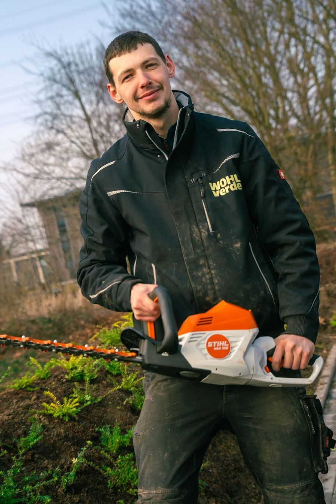
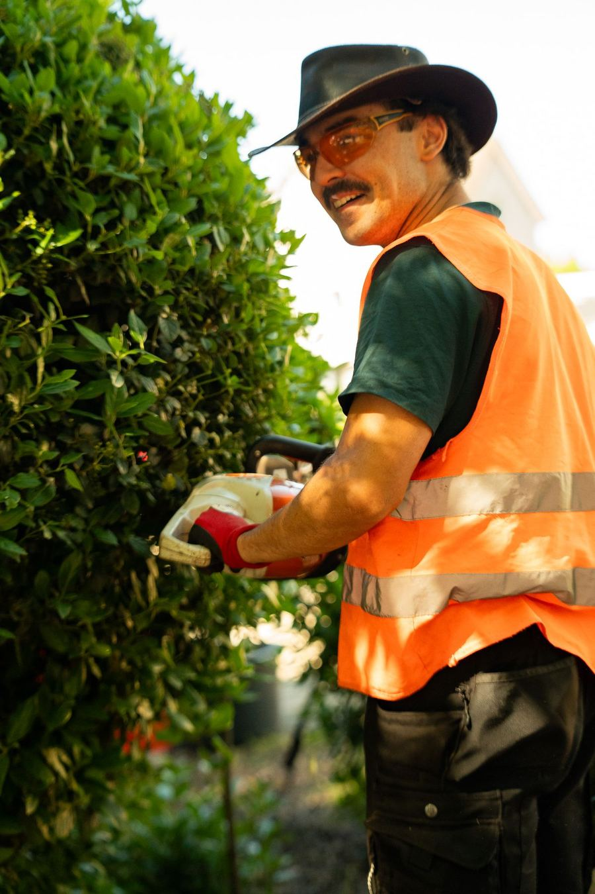
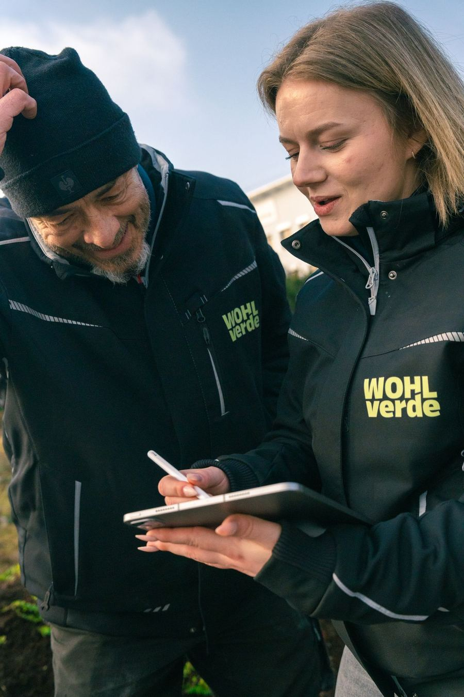
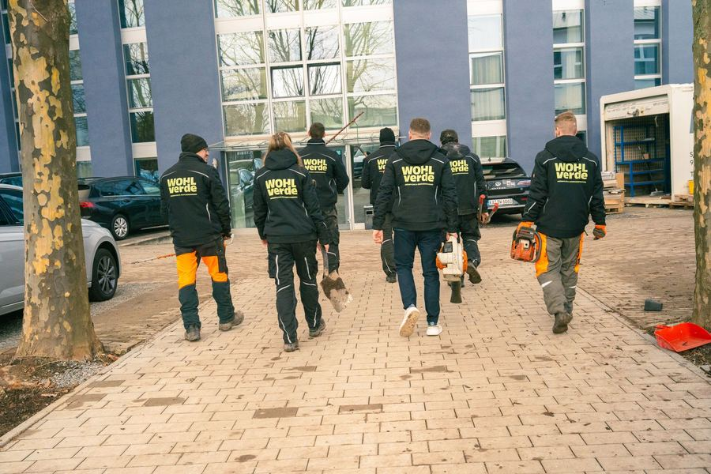

Wir pflegen, was Werte schafft.
Drinnen wie draußen.
Objektbetreuung für Gewerbeimmobilien, Industrieflächen, Wohnanlagen und Kommunen. Mit festen Teams, festen Ansprechpartnern und dokumentierten Abläufen.

einer Hand
- Festangestellte, deutschsprachige Teams
- Feste Ansprechpartner
- Dokumentierte Objektkontrollen
- Seit 2020 in der Region
Ein Partner für Ihr ganzes Objekt.
Grünpflege, Gebäudereinigung, technischer Objektservice und Winterdienst greifen bei uns ineinander. Für Sie heißt das: weniger Abstimmung, klare Zuständigkeiten und planbare Qualität.
Kurz gesagt: WOHLverde ist ein Dienstleister für Objektbetreuung aus Forst bei Bruchsal. Wir übernehmen Grünpflege, Gebäudereinigung, Hausmeisterservice und Winterdienst für Unternehmen, Hausverwaltungen und Kommunen im Raum Bruchsal, Karlsruhe und Bretten, ausschließlich mit eigenem, festangestelltem Personal.

Grünpflege
Strukturierte Pflege von Außenanlagen, Industrieflächen und Bürostandorten, von der Rasenpflege bis zum Baumschnitt.
Mehr erfahren
Gebäudereinigung
Planbare Unterhaltsreinigung für Büros, Industrieobjekte und Wohnanlagen, mit festen Teams und klaren Zuständigkeiten.
Mehr erfahrenHausmeisterservice
Objektkontrollen mit Dokumentation, Instandhaltung und Kleinreparaturen. Ihr Objekt bleibt funktional und sicher.
Mehr erfahrenWinterdienst
Räumen und Streuen für Zufahrten, Gehwege und Parkflächen. Damit alle sicher ankommen.
Mehr erfahrenQualität, die man planen kann.
Wir kennen die Anforderungen von Gewerbeimmobilien und kommunalen Einrichtungen vor Ort. Darum arbeiten wir strukturiert, termintreu und nachvollziehbar.
Regional und schnell vor Ort
Kurze Wege, feste Ansprechpartner und schnelle Reaktionszeiten im Raum Bruchsal und Karlsruhe.
Festes Team, volle Qualitätskontrolle
Ausschließlich festangestellte, deutschsprachige Mitarbeitende. Keine Subunternehmen, kein Wechselpersonal.
Ganzheitliche Objektbetreuung
Grünpflege, Gebäudereinigung und technischer Objektservice greifen ineinander. Ein Partner, ein Ansprechpartner.
Planbare Qualität im laufenden Betrieb
Strukturiert, termintreu und dokumentiert. Leistungen sind klar definiert und dauerhaft nachvollziehbar.

Wir sehen hin, bevor es teuer wird.
Regelmäßige Objektkontrollen mit Dokumentation, laufende Instandhaltung und schnelle Reaktion: So bleibt Ihre Immobilie funktional, sicher und im Wert erhalten.
- Feste Teams und Ansprechpartner
- Schnelle Reaktionszeiten
- Objektkontrollen mit Protokoll
- Kleinreparaturen und Instandhaltung
- Koordination externer Dienstleister
- Unterstützung im laufenden Betrieb
Ergebnisse, die man sieht.
Unkrautbeseitigung auf der Pflasterfläche eines Firmengeländes. Gleiche Stelle, ein Arbeitseinsatz.
- Grün- und Grauflächen
- Umweltschonende Methoden
- Fester Pflegeplan statt Einzelaktion


Gemacht für Profis mit Verantwortung.
Ob Verwaltungsgebäude, Gewerbepark oder Wohnanlage: Wir richten Leistungsumfang und Rhythmus nach Ihrem Objekt, nicht nach einem Standardpaket.
Bürogebäude, Gewerbeparks und Firmengelände, gepflegt im laufenden Betrieb.
Industrieflächen und Außenanlagen mit klaren Abläufen und Dokumentation.
Wohnanlagen mit Treppenhausreinigung, Grünpflege und Hausmeisterservice.
Kommunale Einrichtungen und Flächen, zuverlässig und nachvollziehbar betreut.
Unternehmen und Einrichtungen, die uns vertrauen
In vier Schritten zum gepflegten Objekt.
Transparent von der ersten Anfrage bis zur laufenden Betreuung. Sie wissen jederzeit, wer zuständig ist und was als Nächstes passiert.
Unverbindliche Anfrage
Sie rufen an oder nutzen das Formular. Wir melden uns zeitnah und stimmen einen ersten Termin ab.
Persönliches Gespräch
Wir analysieren Ihre Anforderungen, Abläufe und die Besonderheiten Ihrer Immobilie.
Termin und Angebot
Vor-Ort-Termin mit Objektaufnahme. Danach erhalten Sie ein transparent kalkuliertes Angebot.
Zuverlässige Betreuung
Nach Ihrer Freigabe starten wir mit festem Team, klaren Prozessen und definierten Zuständigkeiten.

Bei uns kennen Sie die Menschen, die bei Ihnen arbeiten.
Wir arbeiten ausschließlich mit festangestellten, deutschsprachigen Mitarbeitenden. Regelmäßige Schulungen sichern den Standard, klare Kommunikation sorgt dafür, dass nichts verloren geht.
Lernen Sie uns kennenZu Hause in Forst. Schnell vor Ort in der Region.
Kurze Wege bedeuten schnelle Reaktionszeiten. Wir betreuen Objekte im Raum Bruchsal, Karlsruhe, Bretten und Umgebung.
Kurz und klar beantwortet.
Ihre Frage ist nicht dabei? Rufen Sie uns an oder schreiben Sie uns, wir antworten gern persönlich.
Kontakt aufnehmenWelche Leistungen bietet WOHLverde an?
WOHLverde bietet Grünpflege (Garten- und Landschaftspflege, Baumpflege), Gebäudereinigung (Unterhalts-, Treppenhaus-, Glas- und Grundreinigung), Hausmeisterservice mit Objektkontrollen und Kleinreparaturen sowie Winterdienst. Alles ist einzeln oder als Gesamtpaket aus einer Hand buchbar.
In welchen Orten ist WOHLverde tätig?
Unser Standort ist in Forst bei Bruchsal. Wir betreuen Objekte im Raum Bruchsal, Karlsruhe, Bretten und Umgebung, zum Beispiel in Forst, Bruchsal, Karlsruhe, Bretten, Hambrücken, Ubstadt-Weiher, Kronau und Bad Schönborn.
Arbeitet WOHLverde mit Subunternehmen?
Nein. Wir arbeiten ausschließlich mit eigenen, festangestellten und deutschsprachigen Mitarbeitenden. So behalten wir die volle Kontrolle über die Qualität.
Für wen arbeitet WOHLverde?
Unser Schwerpunkt sind Unternehmen, Gewerbeimmobilien, Industrieflächen, Hausverwaltungen und kommunale Einrichtungen. Auf Anfrage betreuen wir auch Privatkunden.
Was kostet die Objektbetreuung bei WOHLverde?
Das hängt von Größe, Art und gewünschtem Rhythmus ab. Nach einem kostenlosen Vor-Ort-Termin erhalten Sie ein transparent kalkuliertes Angebot mit klar definierten Leistungen.
Ist WOHLverde dasselbe Unternehmen wie H&G WOHL?
Ja. H&G WOHL heißt jetzt WOHLverde. Team, Service und Qualitätsanspruch bleiben gleich.
Folge uns auf Instagram: @wohlverde
Echte Einsätze, echtes Team, echte Ergebnisse. Auf Instagram zeigen wir, wie unser Alltag zwischen Hecke, Treppenhaus und Werkstatt aussieht.


Mach mit. Wir bilden dich aus.
Du suchst einen Job mit Abwechslung, festem Team und echten Perspektiven? Auch handwerklich begabte Quereinsteiger sind bei uns willkommen, denn wir bieten Fortbildungen und Schulungen für jeden Fachbereich.

Ihr Objekt verdient einen Partner, der mitdenkt.
Erzählen Sie uns kurz, worum es geht. Wir melden uns in der Regel innerhalb eines Werktags und vereinbaren einen Vor-Ort-Termin.